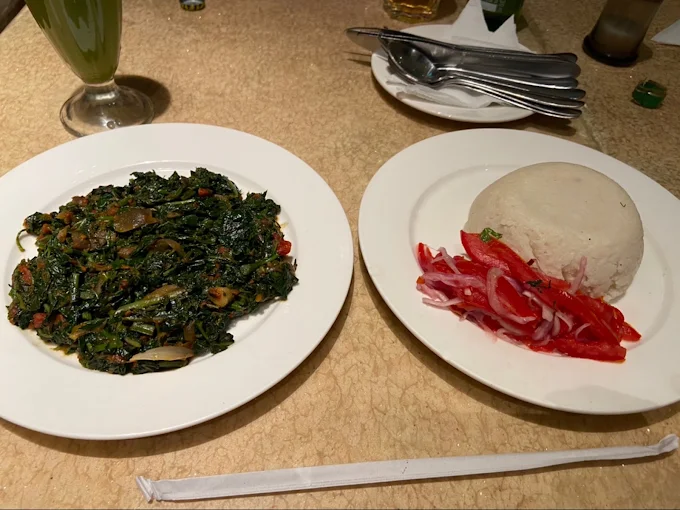
Kenyan favourite
Ugali & Managu
Traditional comfort food with the warmth and generosity Oliveira is known for.
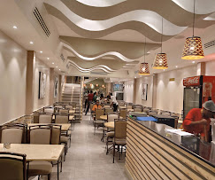
Nairobi · African & Continental Dining
Generous plates, familiar flavours and the kind of hospitality that makes breakfast, lunch and dinner feel like coming home.
A taste of home
Oliveira is the kind of place built around familiarity: breakfast before work, lunch with colleagues, dinner with family and generous food that feels honest.
This concept brings that warmth online through natural colour, real photography and a clear path to reservations, catering and walk-ins.
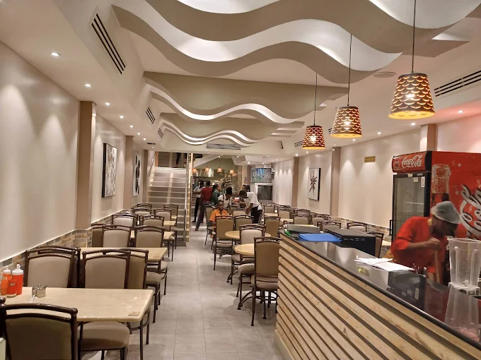
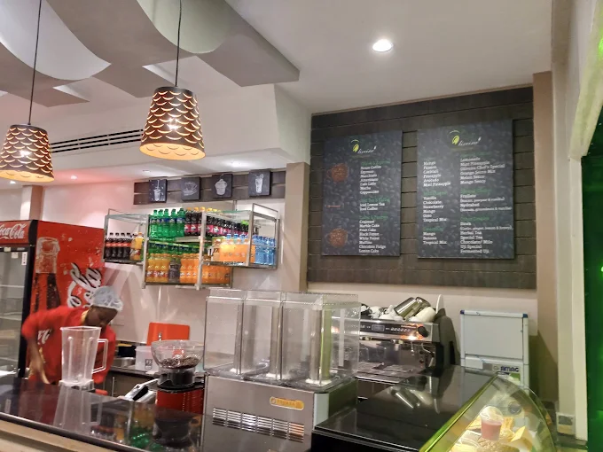
Across the day
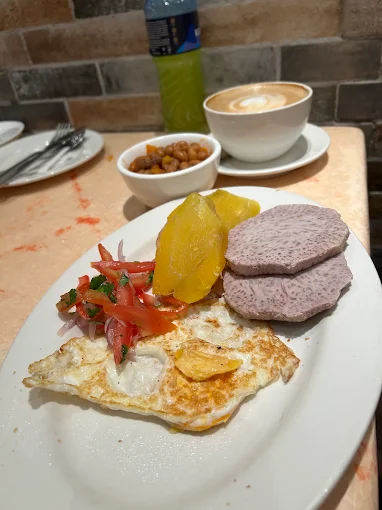
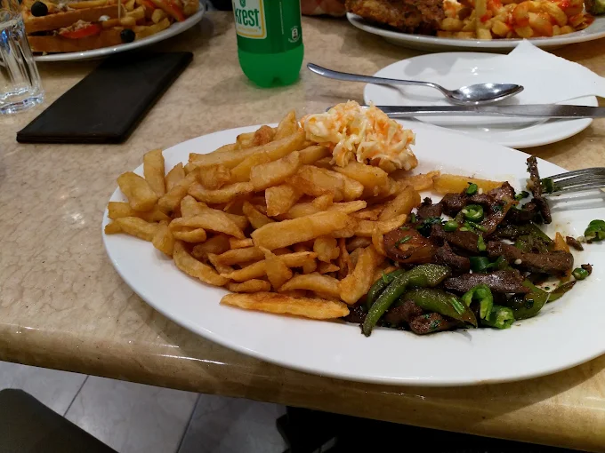
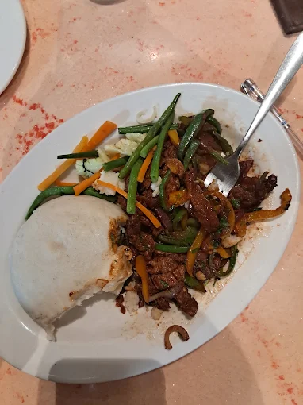
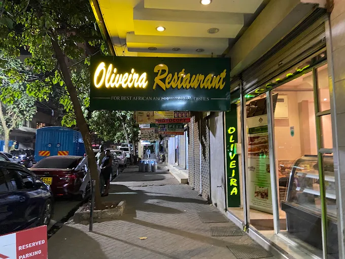
Beyond the dining room
Office lunches, family celebrations, private functions and corporate events should be easy to enquire about directly from the website.
From the table
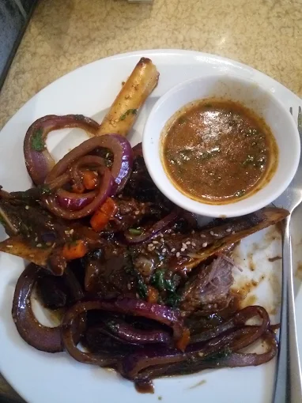
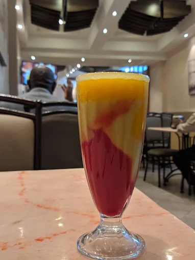
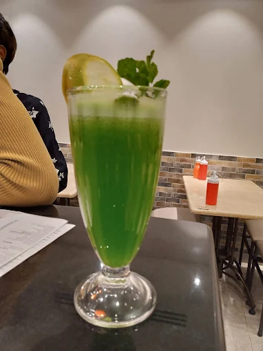
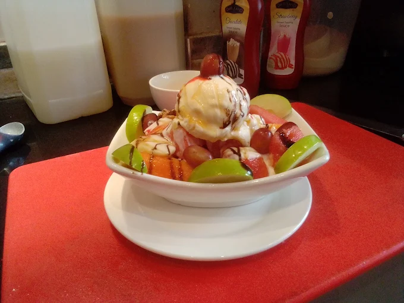
Why guests return
“It feels familiar — the kind of restaurant you can come back to again and again.”
“Generous portions, welcoming service and food that feels like home.”
“A dependable Nairobi favourite for breakfast, lunch and family meals.”
Visit Oliveira
Confirm the exact branch address before launch.
Call for tables, group dining and enquiries.
Families, business meals and private occasions.